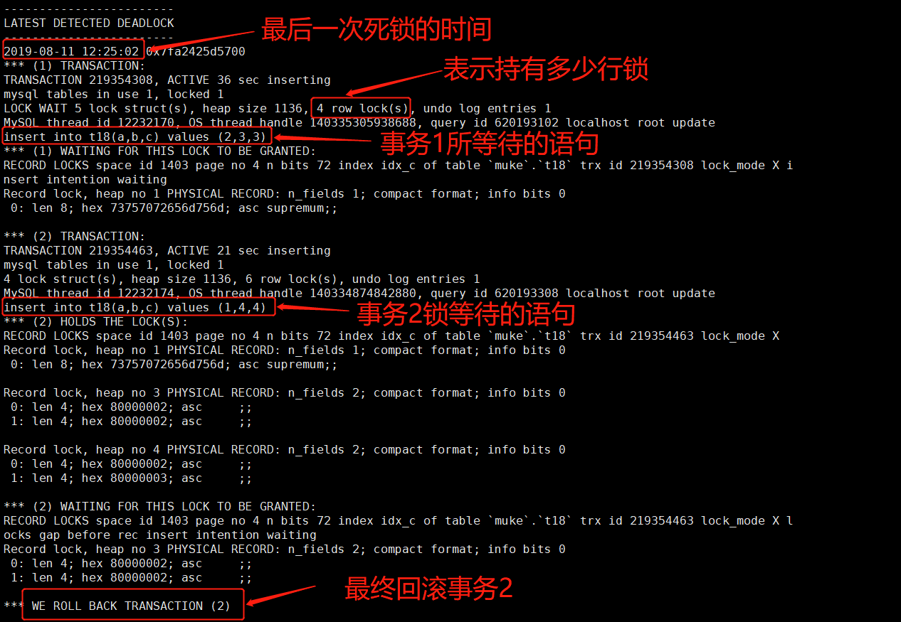

前言
有了锁的基础之后，我们来了解一下死锁的产生和解决。
认识死锁
死锁是指两个或者多个事务在同一资源上相互占用，并请求锁定对方占用的资源，从而导致恶性循环的现象。
InnoDB 中解决死锁问题有两种方式：
- 检测到死锁的循环依赖，立即返回一个错误（这个报错内容请看下面的实验），将参数 innodb_deadlock_detect 设置为 on 表示开启这个逻辑；
- 等查询的时间达到锁等待超时的设定后放弃锁请求。这个超时时间由 innodb_lock_wait_timeout 来控制。默认是 50 秒。
一般线上业务都建议使用的第 1 种策略，因为第 2 种策略锁等待时间是 50 秒，对于高并发的线上业务是不能接受的。
但是第 1 种策略，也会有死锁检测时的额外 CPU 开销的，比如电商中的秒杀场景。这种情况就可以根据业务开发商量优化程序，如果可以确保业务一定不会出现死锁，可以临时把死锁检测关掉，以提高并发效率。
为什么会产生死锁
我们通过几个实验来构造几种产生死锁的情况，首先创建测试表并写入数据：
1 | use muke; |
同一张表中
不同线程并发访问同一张表的多行数据，未按顺序访问导致死锁。
| session1 | session2 |
|---|---|
| begin; | begin; |
| select * from t18 where a=1 for update; … 1 row in set (0.00 sec) | select * from t18 where a=2 for update; … 1 row in set (0.00 sec) |
| select * from t18 where a=2 for update;/* SQL1 */ （等待） | |
| （session2 提示死锁回滚后，SQL1 成功返回结构） | select * from t18 where a=1 for update; ERROR 1213 (40001): Deadlock found when trying to get lock; try restarting transaction |
| commit; | commit; |
session1 在等待 session2 释放 a=2 的行锁，而 session2 在等待 session1 释放 a=1 的行锁。两个 session 互相等待对方释放资源，就进入了死锁状态。
因此，在上面的例子中，如果 session1 中的事务提交之后，再执行 session2 中的事务，就可以避免这次死锁的发生了。
所以对于程序多个并发访问同一张表时，如果事先确保每个线程按固定顺序来处理记录，可以降低死锁的概率。
不同表之间
不同线程并发访问多个表时，未按顺序访问导致死锁：
| session1 | session2 |
|---|---|
| begin; | begin; |
| select * from t18 where a=1 for update; … 1 row in set (0.00 sec) | select * from t18_1 where a=1 for update; … 1 row in set (0.00 sec) |
| select * from t18_1 where a=1 for update;/* SQL2 */ 等待 | |
| （session2 提示死锁回滚后，SQL1 成功返回结构） | select * from t18 where a=1 for update; ERROR 1213 (40001): Deadlock found when trying to get lock; try restarting transaction |
| commit; | commit; |
与 同一张表类似，但是这个例子涉及到两张表，如果上例中，之前就约定好 session1 中的事务执行完毕后，再执行 session2 的事务，则可以避免死锁的产生。
因此，不同程序并发访问多个表时，应尽量约定以相同的顺序来访问表，可大大降低并发操作不同表时死锁发生的概率。
事务隔离级别
RR 隔离级别下，由于间隙锁导致死锁：
| session1 | session2 |
|---|---|
| set session transaction_isolation=‘REPEATABLE-READ’; /* 设置会话隔离级别为 RR */ | set session transaction_isolation=‘REPEATABLE-READ’; /* 设置会话隔离级别为 RR */ |
| begin; | begin; |
| select * from t18 where a=1 for update; … 1 row in set (0.00 sec) | select * from t18 where a=2 for update; … 1 row in set (0.00 sec) |
| insert into t18(a,b,c) values (2,3,3);/* SQL3 */ 等待 | |
| （session2 提示死锁回滚后，SQL1 成功返回结构） | insert into t18(a,b,c) values (1,4,4);/* SQL4 */ ERROR 1213 (40001): Deadlock found when trying to get lock; try restarting transaction |
| commit; | commit; |
有之前的索引知识可以知道 SQL3 需要等待 a=2 获得的间隙锁，而 SQL4 需要等待 a=1 获得的间隙锁，两个 session 互相等待对方释放资源，就进入了死锁状态。
类似这种情况，可以考虑将隔离级别改成 RC（这里各位读者可以尝试在 RC 隔离级别下，做上面的实验），降低死锁的概率（当然RC 隔离级别可能会导致幻读，因此需要确定是否可以改成 RC。）
如何降低死锁概率
那么应该怎样降低出现死锁的概率呢？这里总结了如下一些经验：
- 更新 SQL 的 where 条件尽量用索引；
- 基于 primary 或 unique key 更新数据；
- 减少范围更新，尤其非主键、非唯一索引上的范围更新；
- 加锁顺序一致，尽可能一次性锁定所有需要行；
- 将 RR 隔离级别调整为 RC 隔离级别。
分析死锁的方法
尽管在上面介绍了降低死锁概率的方法，但是在实际工作中，死锁很难完全避免。因此，捕获并处理死锁也是一个好的编程习惯。
InnoDB 中，可以使用 SHOW INNODB STATUS 命令来查看最后一个死锁的信息。我们可以尝试用下这个命令获取一些死锁信息，如下：
1 | show engine innodb status\G |
如上面的图片，就是事务隔离级别例子中的死锁情况，在最后显示回滚了事务 2，也就是对应实验中的 session2。
另外设置 innodb_print_all_deadlocks = on 可以在 err log 中记录全部死锁信息。
因此我们可以通过上面两种方式捕获死锁信息，从而进行优化。
总结
本节聊了死锁相关的内容。通过具体实验列举了几种出现死锁的情况：
- 不同线程并发访问同一张表的多行数据，未按顺序访问导致死锁；
- 不同线程并发访问多个表时，未按顺序访问导致死锁；
- RR 隔离级别下，由于间隙锁导致死锁。
后面提供了几种降低死锁概率的方法。
由于死锁不能完全杜绝，因此，在最后提供了捕获死锁信息的方法，在工作中我们可以把死锁信息记录下来，如果出现频率过高，就应该考虑去优化程序了。
参考资料
《深入浅出 MySQL》第 2 版：20.3.9 关于死锁
《高性能 MySQL》第 3 版：1.3.2 死锁
《MySQL 技术内幕》第 2 版：6.7 死锁

...
...
This is copyright.